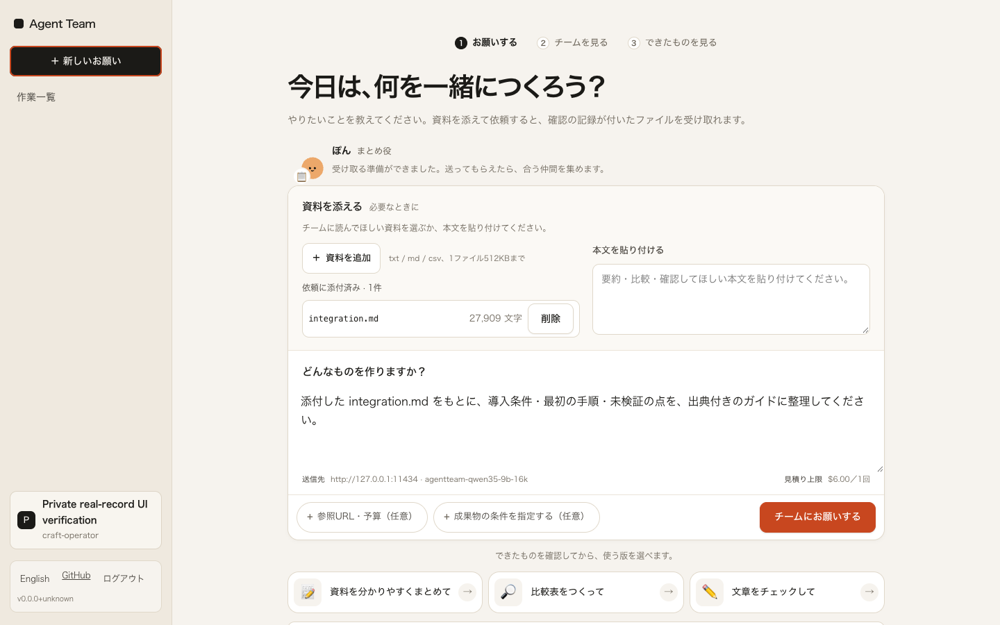

F-1保存された日本語原文の抜粋
変更前e3420149be9b
クローンして make setup → Docker もしくはローカル実行のアプリケーション（backend / frontend 構成）原文を開く 変更後fbc33429ea6f
クローンして make setup → Docker もしくはローカル実行のアプリケーション（内部構成については根拠引用を確認できておらず未確認のため記載しない）原文を開く 作成と確認を分担する AI チーム
資料を渡して、作成と確認をチームに。できたファイルと修正の記録を見比べて、使う版はあなたが選びます。
現在はセルフホストでの試用に対応。登録してすぐ使える公開サービスは準備中です。
01 / 実記録をひらく
公開ページを比較した調査メモに、確認担当が出した3つの指摘。選ぶと、保存された変更前と変更後の原文を読めます。
クローンして make setup → Docker もしくはローカル実行のアプリケーション（backend / frontend 構成）原文を開く クローンして make setup → Docker もしくはローカル実行のアプリケーション（内部構成については根拠引用を確認できておらず未確認のため記載しない）原文を開く 参考（ページ上部にリンクされている公式リポジトリ https://github.com/agentskills/agentskills の記載）: "Apache-2.0 license" および "Code in this repository is licensed under Apache 2.0. Documentation is licensed under CC-BY-4.0. See individual directories for details."原文を開く 限定事項: 取得できたのは抽出テキストのみで href 属性は含まれない。したがって「ラベル agentskills/agentskills のリンクがページ上に存在する」ことは確認できたが、そのリンク先が `https://github.com/agentskills/agentskills` であること自体は本取得からは確認できていない（ラベルとリポジトリ名の一致による推定にとどまる）。旧版 r1 の「ページ上部にリンクされている公式リポジトリ」という表現は、この限定付きで読むべきものとする。原文を開く Python ライブラリ（uv add deepagents）＋ JS/TS 版＋ CLI（Deep Agents Code）原文を開く Python ライブラリ（uv add deepagents）＋ JS/TS 版（"available as a JavaScript/TypeScript library"）＋ ターミナル上の既製コーディングエージェント（Deep Agents Code / 原文 "a pre-built coding agent in your terminal"）原文を開く 3件の指摘への修正は記録されていますが、出典との逐一照合は未確認。最終レビューが予算上限で終わったため、実行全体は未完了です。
この記録は Claude Code 接続で実行。現在のローカルモデルの品質を示すものではありません。02 / あなたの作業台
資料を添え、依頼を書き、できたものを確かめる。管理用の設定と、日々の仕事を分けています。

実ファイルの添付、または文章の貼り付けから始めます。
成果物とやりとりを同じ作業画面で。未確認の点も残ります。
版の採用と、品質の保証は別のこと。内容を確かめてから保存します。
03 / それぞれに、役割を
役割を分け、やりとりを残す。確認担当も見逃すことがあるため、大事な成果物はあなた自身でも確かめてください。
まとめ役
お願いを、成果物と完了条件に分けます。必要な仲間だけに仕事を頼みます。
調べる係
渡した資料や公開ページを読み、出典つきでメモにします。
つくる係
コード、文書、表。指摘を受けたら、その版を直して出し直します。
確かめる係
完了条件を一つずつ確かめます。確かめられなかったことは「未確認」と残します。
ターミナルで実行
uvx --from "git+https://github.com/FORIFOR/Multibot#subdirectory=backend" agentteam quickstart必要なものmacOS / Linux / Windows と uv。uv が未導入なら curl -LsSf https://astral.sh/uv/install.sh | sh（Windows は 公式の手順）。Python の準備は要りません。
利用料はかかりません。クラウドのAIを使う場合は、そのAIの利用料が別にかかります。
Ollamaならローカルのモデルへ。クラウドのモデルを選ぶと、その接続先に入力が送られます。記録と成果物は実行環境に保存します。
FAQ
一人のAIが答えて終わりではなく、作る係と確かめる係が分かれています。受け取るのは返事ではなくファイルで、何を確かめたか、何が未確認かの記録も残ります。
いいえ。確かめる係が見逃すこともあります。だから、未完了や未確認をそのまま表示し、うまくいかなかった実行記録も公開しています。大事な成果物は、ご自身でも確認してください。
アプリは無料のオープンソース（MIT）です。クラウドのAIにつなぐ場合は、そのAIの利用料がかかります。一回ごとの予算上限を設定でき、達すると止まります。
まだ一般公開サービスは提供していません。現在は自分の環境への導入・試用ができます。公開環境、自己登録、運用体制、業務品質の受入を進めています。
実行環境に保存されます。自分のPCに導入すればそのPC、専用サーバーならそのサーバーです。クラウドのAIを選ぶ場合は、入力がその接続先へ送られます。
業務での利用
対象の作業と合格条件を絞って、一緒に確かめます。顧客データでの有償PoC、本番SLA、SSO、組織分離は、提供済みとはしていません。
公開サービス・一般業務の品質は、まだ受入を終えていません。提供範囲と未完了の項目 ↗